Cmentarz Dąbrówki Breńskie
„Pamięć to forma spotkania, które trwa wiecznie.”
„Pamięć to forma spotkania, które trwa wiecznie.”
Cmentarz Parafialny p.w. Przemienienia Pańskiego w Dąbrówkach Breńskich to miejsce zadumy, modlitwy i wspomnień. Spoczywają tu mieszkańcy naszej wsi i okolicznych miejscowości – ci, którzy budowali wspólnotę, przekazywali wartości i wiernie kroczyli przez życie. Dzięki tej stronie możesz łatwo odszukać groby bliskich, przejrzeć archiwa i podzielić się wspomnieniami.
 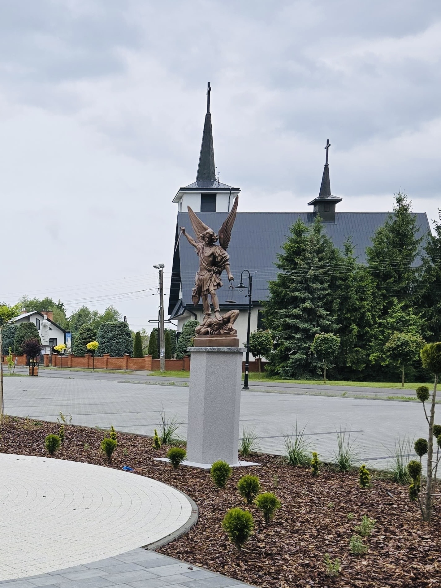
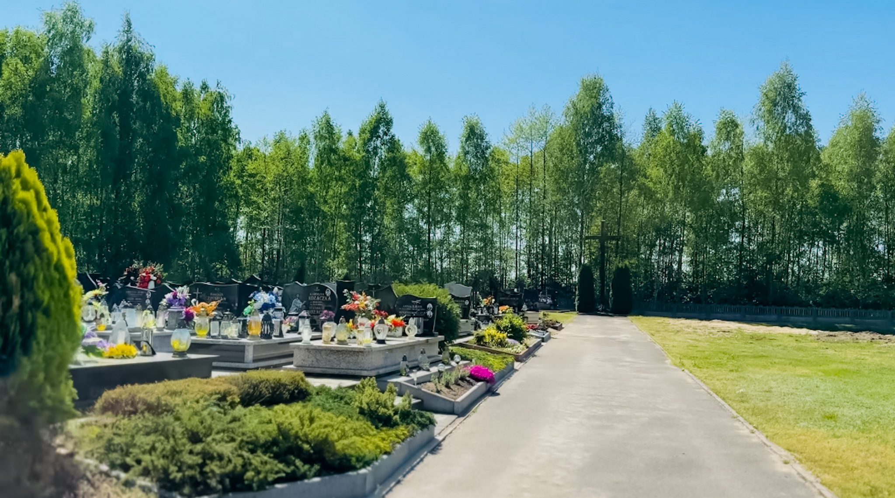
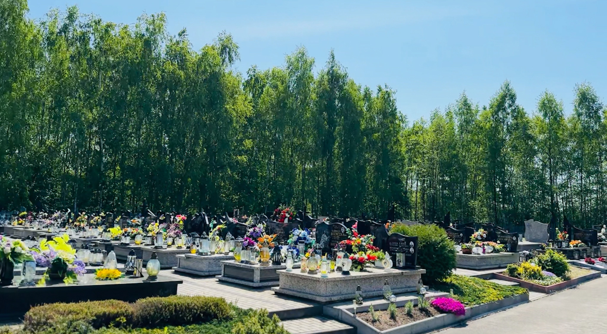
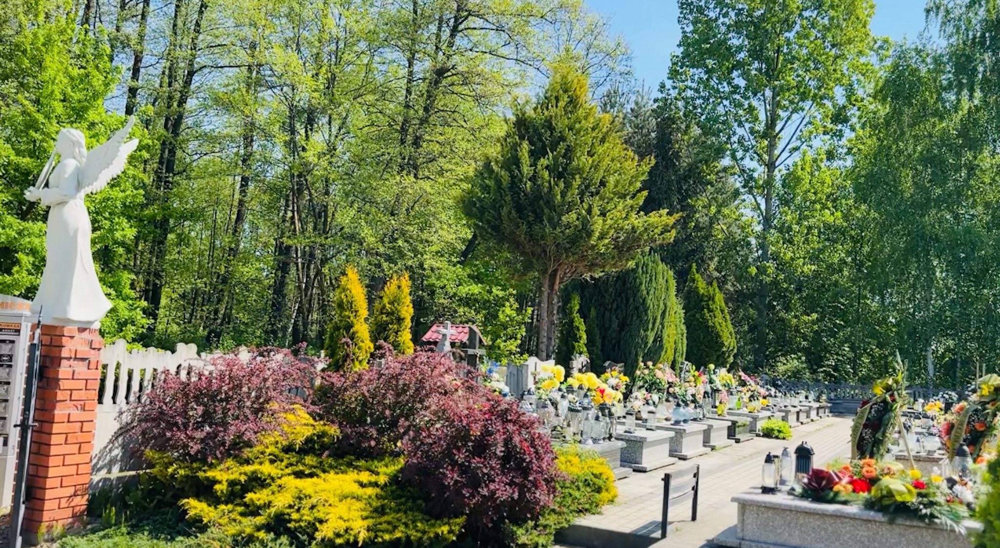
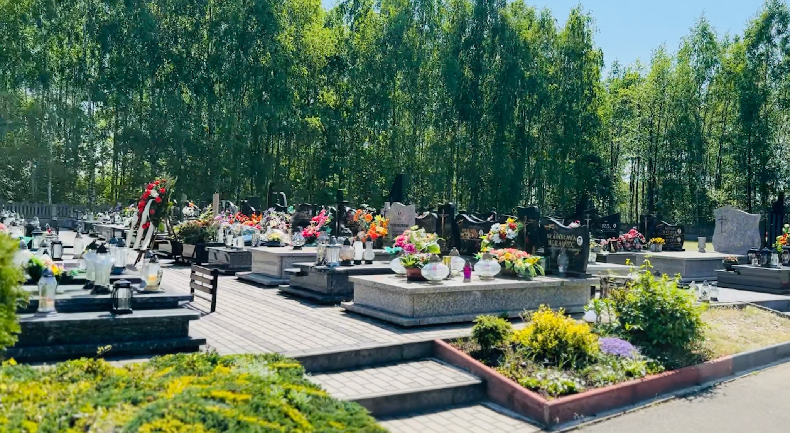
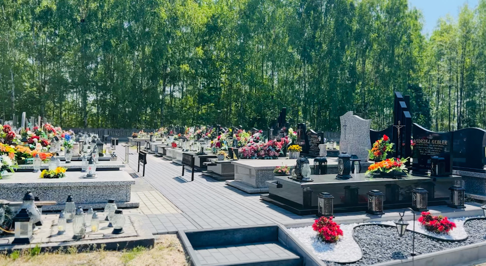
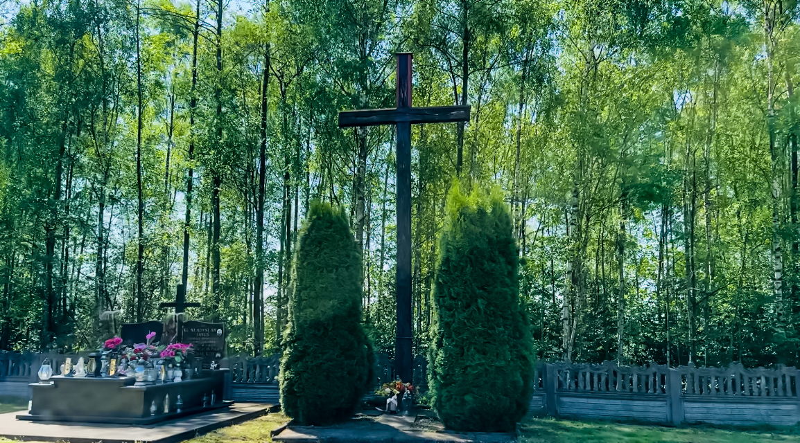
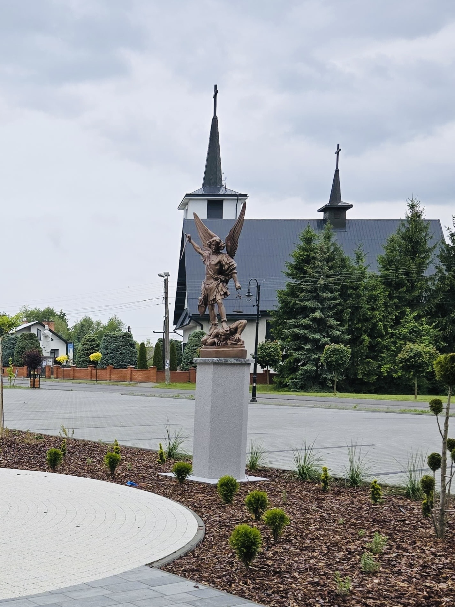
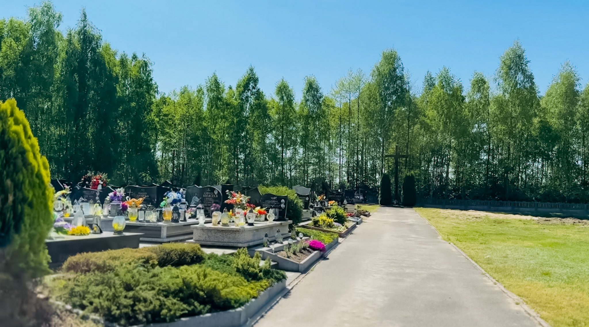
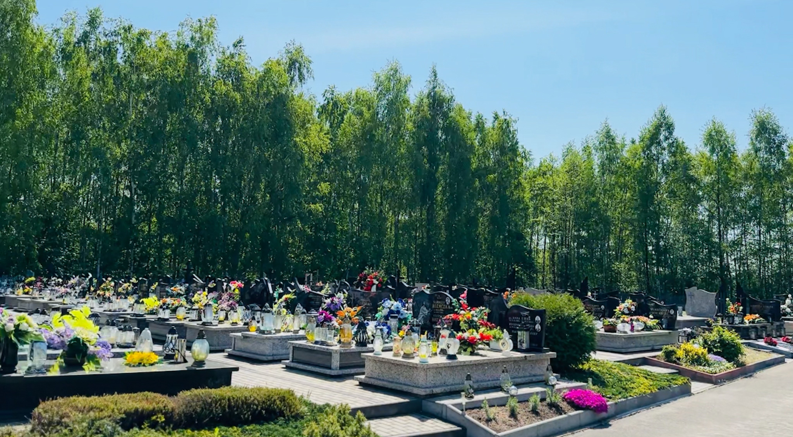
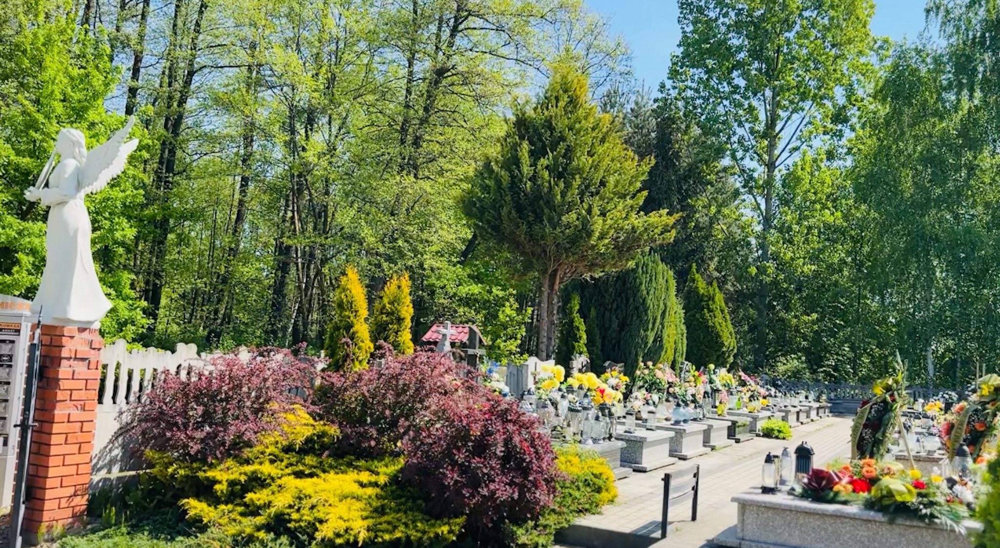
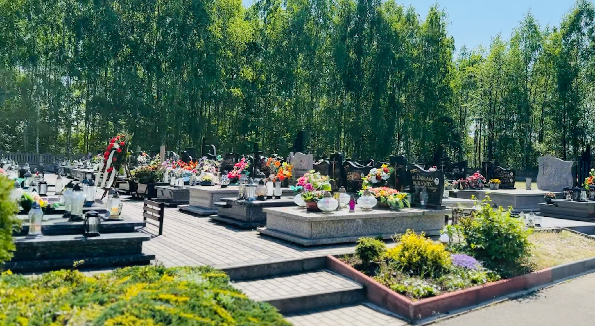
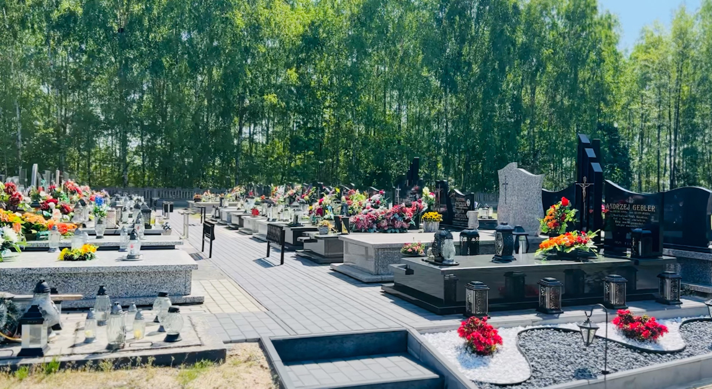
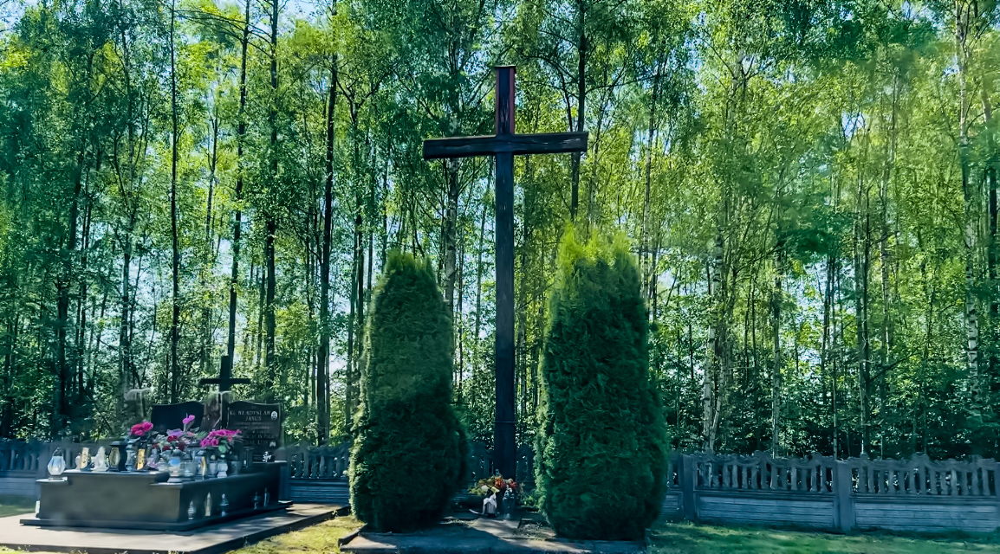
Ks. Władysław Januś (1940–2017) był sercem parafii w Dąbrówkach Breńskich. Jako proboszcz nie tylko prowadził wiernych duchowo, ale z wielką determinacją zainicjował i zrealizował budowę obecnego kościoła. Jego ciepło, pokora i oddanie sprawiły, że na zawsze pozostał w pamięci mieszkańców jako duszpasterz, który potrafił jednoczyć i prowadzić przez życie. Spoczywa w miejscu, które pomógł stworzyć – na naszym parafialnym cmentarzu.
Ks. Michał Łos (1991–2019) był młodym kapłanem, który pokazał światu, czym jest prawdziwa wiara i odwaga. Gdy ciężka choroba przerwała jego formację, nie przestał marzyć o kapłaństwie. Dzięki wyjątkowej łasce papieża Franciszka przyjął święcenia w szpitalnej sali i zdążył odprawić trzy Msze Święte. Jego krótkie, ale niezwykle głębokie kapłańskie życie było świadectwem świętości, które poruszyło serca tysięcy ludzi. Spoczywa w grobowcu kapłańskim – w swojej ukochanej rodzinnej parafii.
Cmentarz to przestrzeń pamięci, modlitwy i wdzięczności – miejsce obecności tych, którzy odeszli. Troszcząc się o nie wspólnie, okazujemy miłość i szacunek, który trwa poza czasem.
Jeśli czujesz w sercu chęć wsparcia, możesz przekazać dobrowolną darowiznę na rzecz utrzymania cmentarza.
Nr konta parafii:
73 9462 1026 2003 3001 1283 0001
Masz pytania lub chcesz zgłosić poprawki? Skontaktuj się z nami pod adresem:
parafia@dabrowkibrenskie.pl lub pod numerem tel. 14-641-21-80
Adres Parafii:
PARAFIA RZYMSKOKATOLICKA
p.w. PRZEMIENIENIA PAŃSKIEGO
DĄBRÓWKI BREŃSKIE 151 A
33-210 Olesno